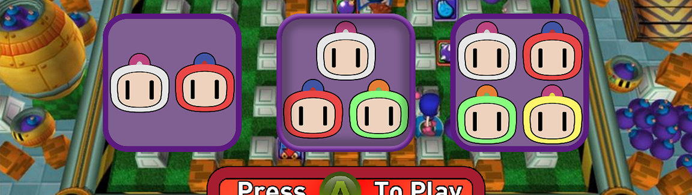

Bomber-Man Clone
In this project, I took on the task of extending a basic game engine provided at the start of the semester. Over several months, my goal was to enhance the engine by adding missing features and, in the end, use it to create a game. Although this project originated in an educational setting, it became an exciting and challenging endeavor in its own right.
At the beginning, the engine lacked essential functionality, and my task was to rebuild it. This involved implementing various features, including:
Bomber-man inspired game: With the improved engine in hand, the final project was to create a game that showcased our progress. Given the time constraints, I opted to develop a local co-op game, drawing inspiration from the classic Bomber-Man. This choice allowed me to leverage the engine's capabilities to create an engaging gaming experience.
Shader Implementation with DirectX11: I implemented shares using DirectX11 whith the Effects system. This choice helped elevate the game's graphics and simplified the implementation process.
Although this project started as a school assignment, it became a meaningful experience that grew my interest in engine development and game creation. It was my first exposure to working with a game engine, and it sparked my passion for this field. Building the engine and creating a Bomber-Man-inspired game provided valuable insights and laid the groundwork for my future exploration in this area.